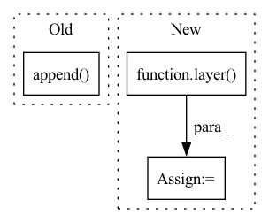

Pattern ID :12722
Before Change
x = resnet(x, t)
x = resnet2(x, t)
x = attn(x)
h.append( x)
x = downsample(x)
x = self.mid_block1(x, t)
x = self.mid_attn(x)After Change
if isinstance(layer, ResnetBlock):
x = layer(x, t)
else:
x = layer( t)
feats.append(x)
for layer in self.mid:
if isinstance(layer, ResnetBlock):In pattern: SUPERPATTERN
Frequency: 3
Non-data size: 3
Instances Fragment ID: 43072785
Project Name: janspiry/image-super-resolution-via-iterative-refinement
Commit Name: 519d366759ea639a68262c20661fa8af7e85cfc6
Time: 2021-07-30
Author: jiangliangwei@tetras.com
File Name: model/unet.py
M Class Name: UNet
N Class Name: UNet
M Method Name: forward(3)
N Method Name: forward(3)
M Parent Class: nn.Module
N Parent Class: nn.Module
M File Name: model/unet.py
N File Name: model/unet.py
M Start Line: 202
M End Line: 224
N Start Line: 216
N End Line: 238
Before Change
x = resnet(x, t)
x = resnet2(x, t)
x = attn(x)
h.append( x)
x = downsample(x)
x = self.mid_block1(x, t)
x = self.mid_attn(x)After Change
if isinstance(layer, ResnetBlock):
x = layer(torch.cat((x, feats.pop()), dim=1), t)
else:
x = layer( t)
return self.final_conv(x)
Fragment ID: 43072788
Project Name: janspiry/image-super-resolution-via-iterative-refinement
Commit Name: a843610e321ec7e1898e97dd495f8991182b8b87
Time: 2021-07-30
Author: lw_jiang@foxmail.com
File Name: model/unet.py
M Class Name: UNet
N Class Name: UNet
M Method Name: forward(3)
N Method Name: forward(3)
M Parent Class: nn.Module
N Parent Class: nn.Module
M File Name: model/unet.py
N File Name: model/unet.py
M Start Line: 202
M End Line: 224
N Start Line: 216
N End Line: 238
Before Change
if self.return_intermediate:
intermediate.append(output)
intermediate_reference_points.append( reference_points)
if self.return_intermediate:
return torch.stack(intermediate), torch.stack(intermediate_reference_points)
After Change
intermediate = []
for layer in self.layers:
output = layer( output, query_pos, lvl_pos, src, src_spatial_shapes, src_level_start_index)
if self.return_intermediate:
intermediate.append(output)
Fragment ID: 43072783
Project Name: bwittmann/transoar
Commit Name: 393e27eea21f0857ee4a388b54e0dd658c958587
Time: 2022-01-27
Author: bastian.wittmann@tum.de
File Name: transoar/models/necks/deformable_detr_transformer.py
M Class Name: DeformableTransformerDecoder
N Class Name: DeformableTransformerDecoder
M Method Name: forward(7)
N Method Name: forward(9)
M Parent Class: nn.Module
N Parent Class: nn.Module
M File Name: transoar/models/necks/deformable_detr_transformer.py
N File Name: transoar/models/necks/deformable_detr_transformer.py
M Start Line: 282
M End Line: 303
N Start Line: 328
N End Line: 341